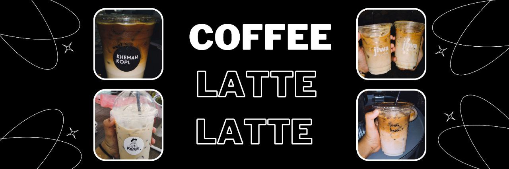
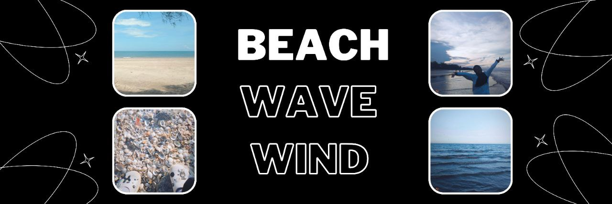
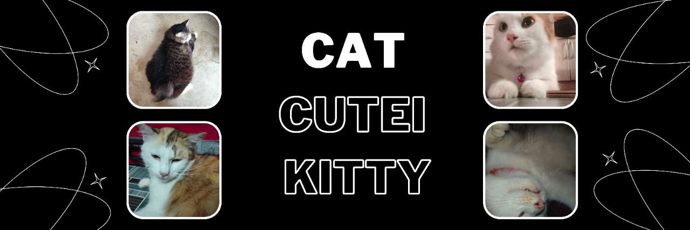
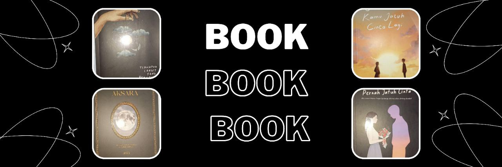

In scince they say that when we look up, our brain gets better at being playful, creative, and thinking critically.
The sky has only the good, only the beautiful in it — which is life free of conditions.
Clouds represent the circumstances of your life. They should remind you that all is passing, and that life goes on.
when i feel sad i would watch sunset and sunrise to because i once read that watching the sun set slowly behind the horizon can help you slow down, relax, and enjoy the beauty of nature, which can help reduce your stress levels.
There’s nothing better than catching a beautiful sunset – or even better, a sunrise.

I TAKE COFFEE EVERYDAY
Usually I will buy coffee which is latte my favourite everytime i back from class
even i know it's bad to take coffee everyday, i can't stop taking latte maybe because of the addicted.
For your infomation, in science it explain that antioxidants have been associated with various health benefits, including reduced inflammation and protection against certain chronic diseases.
I think all student or workers will usually take some coffee everytime they feel exhausted cause sometime the effect from the coffee will be different according to the person.
i would see i'm a coffee lover but not all type of coffee. However i have learn to not taking coffee everyday .

BLUE NATUREEE HEREEEE
I veryyy like beach, like the sand, the wave, the wind it's just very perfect moment
However i'm a little bit dispointed with the beach at kedah because there are too much rubbish till the water change into brown colour
The beach can have lasting benefits for people who have anxiety, depression, elevated stress, and other mental health conditions. Spending just 20 minutes walking along the beach can boost your mood
Stars and sunsets. There is no place like the beach for stargazing! Here, you can really see the stars and appreciate the vastness of the ocean and sky before you. What a great way to get some perspective!
It can be the place where memory capture. The beautiful scenery at the beach is interesting which is the waves, the sound of the waves and other.

MY PET MY CAT
Cat is the mostly become pet. So do I. I really love cat till my family pet one cat which is we named her 'Minah'
But sadly, i actually can't kiss cat or the fur of the cat because it will make me sneeze non-stop and my eyes will be like i'm crying
Owning a cat can be an extremely rewarding relationship. A cat has the ability to both calm your nervous system and provide an immediate outlet for fun and play.
the fact that i can't accept is they have long life spans. The most difficult stage of pet ownership is parting with your beloved companion.
Losing a beloved cat can often feel overwhelming. You may feel waves of intense emotions like sadness, frustration, and guilt, or simply feel numb and lonely.

MY FAVOURITE HOBBY
Usually i will spend my time with reading a book
the genre usually about family,friend or more about life bacause i love to cry when i reading a book like novel. The most novel that usually make me cry is the bookthat publish from Iman Publication
I also would recommend to all person who like poem book to read all poem book from Nukilan Biruni because their poetry very beautiful and the most important thing is there usually use the old malay language and it will make it more beautiful
As a library student i would say book can be your friend too because it can make you happy, blushing and suddenly can make you cry a lot same goes to the human
Book also can gain our knowledge about life and some of the book also can give a good impact to our life to become more better perosn in the future